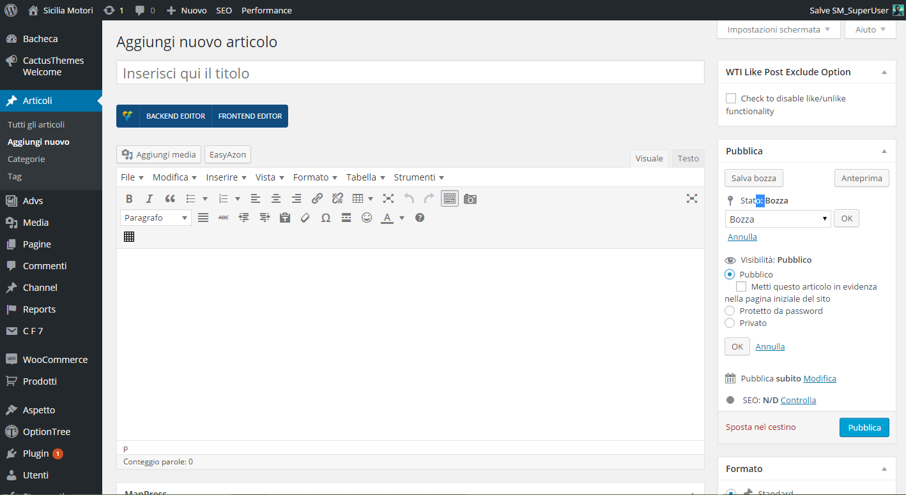
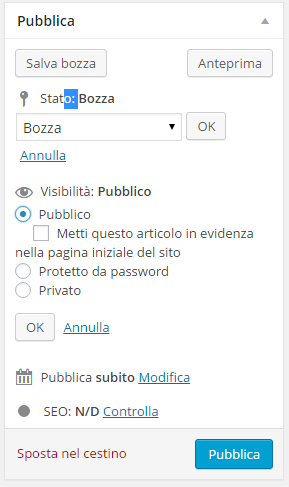
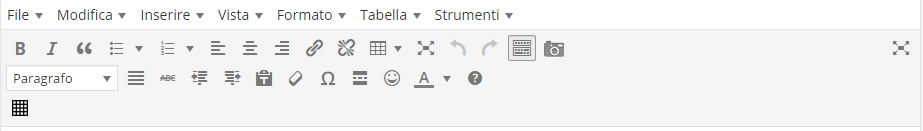
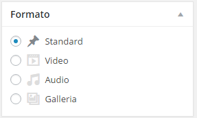
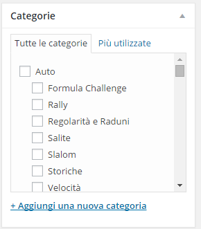
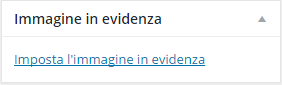
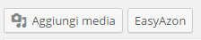

Per inserire un nuovo articolo basta selezionare nel back-end del sito "articoli->aggiungi nuovo". Una volta cliccato su "aggiungi nuovo" vi troverete davanti questa schermata.
Vediamo nel dettaglio da cosa e composta questa schermata:
| Sezione Publica: permette di controllare l'articolo; Stato: può essere Bozza (mentre scrivete l'articolo, con autosalvataggio ogni 5 minuti circa) oppure In Attesa di revisione. Visibilità: Pubblico, Privato non verrà publicato nel sito, Protetto da password solo quelli con la password possono visualizzare il sito. Pubblica: permette di programmare la data d'uscita dell'articolo, ottimo per i periodi di vacanza SEO: indica il livello di SEO presente nell'articolo e pu&pgrave essere grigio, rosso, giallo o verde. |
 |
| La barra degli stumenti è semplice e intuitiva molto simile ad alcuni programmi di scrittura che si usano già |  |
| La sezione formato ci permete di dare una forma diversa all'articolo. Consiglio di lasciare il formato Strandard per tutti gli articoli, mentre di cambiare in Video solo per gli articoli che contengono dei video o che comunque andranno nella sezione dei video |  |
| La sezione Categorie permette di inserire l'articolo che stiamo scrivendo nella categoria giusta e di spuntare nel posto giusto nel sito nuovo. Perciò quando scrivete scegliete soltanto una categoria quella piu pertinente all'articolo, visto che nel sito nuovo esistono delle gerarchie di categorie, andando a selezionare "Formula Challenge", sottocategoria della categoria Classifiche, l'articolo andrà direttamente nella sezione scelta per la formula challenge |  |
| La parte principale dell'articolo è sicuramente l'immagine in evidenza, che ci permetterà di mettere in risalto l'articolo sia nel sito che sui social networks, le dimensioni delle immagini non sono importanti ma sicuramente non devono essere minori di 300 x 300. |  |
| Per aggiungere delle immagini nell'articolo basta cliccare su aggiungi media, potrete scegliere tra le immagini presenti nella libreria o caricarne di vostre. |  |
Come forse avrete notato manca la sezione dedicata al SEO della pagina ne parliamo meglio in questo articolo.
{kind=link}
{kind=link}
{kind=link}